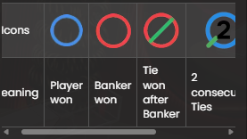
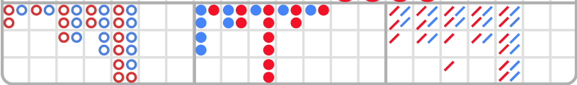

介绍
百家乐是一款经典且广受欢迎的赌场游戏，遍布全球玩家，尤其受到高额玩家的青睐，并在亚洲市场流行。该游戏以规则简明、节奏明快著称。
目标很简单：预测哪一方（闲家或庄家）的点数总和更接近 9。
极速百家乐
玩法说明
开始游戏时，先选择筹码金额，然后将赌注押在“闲家”“庄家”或“平局”投注区。只要下注时间仍开启，您就可以调整投注。
下注结束后，荷官总共发四张牌：第 1 张与第 3 张发给闲家，第 2 张与第 4 张发给庄家。荷官先从闲家的手牌开始扫描。
如任一方需要第三张牌，将根据“第三张牌规则”补发（详见下文）。
当所有需要的牌均已发出，本局结束。点数更接近 9 的一方获胜；若双方点数相同，则判为平局。
获胜的投注会被高亮显示，并按所选投注类型派彩。您的赢取金额也会在屏幕上显示。
本局结束后，牌面会被清理，新的下注阶段随即开始。
牌值
游戏使用 8 副标准的 52 张扑克牌。只计算牌面的数字，花色（红桃、黑桃、方块、梅花）不影响结果。
| 牌 | 数值 |
|---|---|
| A（王牌） | 1 |
| 2–9 | 牌面值（例如，4 = 4） |
| 10、J、Q、K | 0 |
本游戏使用 8 副标准 52 张牌。
在百家乐中，只计算每张牌的点数；花色不会影响结果。
闲家与庄家的手牌通过相加各自牌面点数来计分，最高总点为 9。
若手牌总点超过 9，仅取其个位数。例如，总点 14 记为 4。
示例：
- 6 + 4 = 10 → 记为 0
- 3 + 9 = 12 → 记为 2
- 2 + 2 + 7 = 11 → 记为 1
- K + 5 = 5
- A + 8 = 9
- 7 + 7 = 14 → 记为 4
第三张牌规则
在以下三种情形中，本局在最初四张牌发完后即刻结束（“小手”，不再补牌）：
- 若闲家或庄家任一方首两张牌合计为 8 或 9（称为“天生赢家/自然牌”）。
- 若闲家为 6 点而庄家为 7 点，或反之。
- 若双方首两张牌合计为 6、7、8 或 9 且点数相同，判为平局。
若闲家与庄家双方首两张牌合计介于 0–7 点之间，则根据第三张牌规则判断是否需为任一方补发第三张牌。总是先判断闲家。
闲家补牌规则：
| 闲家首两张合计： | 操作 |
|---|---|
| 0、1、2、3、4、5 | 补第三张牌 |
| 6、7 | 闲家停牌 |
| 自然 8 或 9 | 双方停牌 |
庄家补牌规则：
| 庄家 首两张合计 |
闲家的第三张牌为： | |||||||||
|---|---|---|---|---|---|---|---|---|---|---|
| 0 | 1 | 2 | 3 | 4 | 5 | 6 | 7 | 8 | 9 | |
| 0 | D | D | D | D | D | D | D | D | D | D |
| 1 | D | D | D | D | D | D | D | D | D | D |
| 2 | D | D | D | D | D | D | D | D | D | D |
| 3 | D | D | D | D | D | D | D | D | S | D |
| 4 | S | D | D | D | D | D | D | D | S | S |
| 5 | S | S | S | S | D | D | D | D | S | S |
| 6 | S | S | S | S | S | S | D | D | S | S |
| 7 | S | S | S | S | S | S | S | S | S | S |
| 8 | S | S | S | S | S | S | S | S | S | |
| 9 | S | S | S | S | S | S | S | S | S | |
（D = 需要补牌；S = 停牌）
如果闲家首两张为 6 或 7 点，而庄家首两张少于 6 点，则庄家必须补一张牌。
主要投注
下表列出了主要投注区、赔率与中奖条件：
| 投注区 | 赔率 | 中奖条件 |
|---|---|---|
| 闲家 | 1:1 | 闲家总点 > 庄家总点 |
| 庄家 | 0.95:1 | 闲家总点 < 庄家总点 |
| 平局 | 8:1 | 闲家总点 = 庄家总点 |
重要提示：不允许低风险套利投注（即可能利用奖金机制进行套利的投注方式）。
附加投注
以下为可选的附加投注。并非必须下主要注，玩家可任选其一或全部附加投注：
- 闲对
- 庄对
- 任意对
- 完美对
- 闲家红利（Bonus）
- 庄家红利（Bonus）
对子类附注
| 投注区 | 赔率 | 中奖条件 |
|---|---|---|
| 闲对 | 11:1 | 闲家前两张为任意对子 |
| 庄对 | 11:1 | 庄家前两张为任意对子 |
| 任意对 | 5:1 | 任一方（闲或庄）前两张为任意对子 |
| 完美对 | 25:1 | 任一方（闲或庄）前两张为同点同花色的“完美对子” |
对子类型说明：
- 完美对：两张完全相同的牌（如两张红桃 K）。
- 同色对：两张点数相同、颜色相同但花色不同（如红桃 5 与方块 5）。
- 混合对：两张点数相同、颜色和花色不同（如黑桃 7 与方块 7）。
重要提示： 进行到第 60 局后，将禁用“闲对、庄对、完美对、任意对”附加投注。
闲家/庄家红利（Bonus）附注
若为“自然赢”或非自然赢且胜出点差 ≥ 4 点，则“闲家红利/庄家红利”中奖。
各结果的赔率如下：
| 结果 | 赔率 |
|---|---|
| 非自然牌，赢 9 点 | 30:1 |
| 非自然牌，赢 8 点 | 10:1 |
| 非自然牌，赢 7 点 | 6:1 |
| 非自然牌，赢 6 点 | 4:1 |
| 非自然牌，赢 5 点 | 2:1 |
| 非自然牌，赢 4 点 | 1:1 |
| 自然赢 | 1:1 |
| 自然平 | 推注（退回玩家该注原额） |
重要提示： 进行到第 44 局后，将禁用“闲家红利/庄家红利”附加投注。
下注方式
“桌台名称”显示您当前所在的牌桌；“桌台限额”展示该桌最小与最大可下注额。
点击该区域可打开“赔率与限额”窗口，查看各投注类型的完整限额与赔率。

计时器显示剩余可下注的时间。

筹码盘显示可选择的筹码面值。仅在您的余额范围内的筹码面值才可被选择。

“重押”按钮可在预算允许的情况下重复本局中您上一次的投注。按下“重押”后，该按钮会变成“加倍”。

“加倍”按钮会将您已下的所有投注翻倍，直至余额或限额不允许为止。

“撤销”会逐一回退您最近的操作（如放置筹码或使用“加倍”）。下注阶段结束后不可撤销。

“余额”指示器显示您所选货币的剩余资金；“总投注”显示本局您已下注的总额。

“牌局编号（Game ID）”是每一局的唯一标识，用于在出现争议时进行核对。“时间”显示您当前的本地时间。

当前时间会显示并与服务器同步。

多桌百家乐
免佣百家乐
玩家回报率
按照以“庄家下注”为最优策略的理论计算，百家乐的最优理论玩家回报率（RTP）为 98.94%。
| 投注类型 | 玩家回报率 |
|---|---|
| 闲家 | 98.76% |
| 庄家 | 98.94% |
| 平局 | 85.64% |
附加投注的理论 RTP：
| 投注类型 | 玩家回报率 |
|---|---|
| 闲对 | 89.64% |
| 庄对 | 89.64% |
| 任意对 | 86.29% |
| 完美对 | 86.97% |
| 闲家红利 | 97.35% |
| 庄家红利 | 90.63% |
路单
在百家乐中，玩家通常通过称为“路单”的图表来追踪走势与连庄/连闲。路单为过往结果与牌靴统计提供可视化记录，从而为预测后续结果提供参考。
自每副新牌靴的首局开始记录，直至出现切牌卡为止。一旦发完本靴最后一手，所有记录会被清空，并在下一靴重新开始。
百家乐中有五种传统路单：
- 大路
- 大眼仔
- 小路
- 甲由路
- 珠盘路
大路
大路是主要路单，其他派生路均以此为基础。其使用的符号如下：
大路以本靴首局的结果开始，记在网格左上角。相同一方（闲或庄）连赢则向下续记；若换边，则开启新的一列。如此形成一列列的空心圆：蓝色代表闲赢，红色代表庄赢。

在大路中，平局以一条绿色横线标注在最近一次结果的圆上；若连续多次平局，绿色线上会显示一个小数字表示平局次数。若在尚未出现首个闲/庄结果前出现平局，则左上角格子会先显示绿色平局线；当第一笔闲或庄结果出现时，其相应的圆会出现在同一格子的绿色线下面。
当庄或闲连续胜出超过 6 次时，通常称为“长龙”。一个常见策略是“跟龙”——在换边之前持续追随同一方下注。
派生路
大眼仔、小路与甲由路均由大路推演而来，用于展示其中是否存在某些“规律”。这些“预测型路单”显示的是结构与节奏，而非闲/庄本身。
每种派生路使用不同符号：大眼仔用空心圆、小路用实心圆、甲由路用斜杠。红色代表“有规律/可预测”，蓝色代表“混沌/无明显规律”。需要注意，这里的颜色并不代表庄或闲结果。
派生路并非从牌靴一开始就绘制，而是从大路中特定列的第二手之后开始：
- 大眼仔：从第二列的第二手之后开始。
- 小路：从第三列的第二手之后开始。
- 甲由路：从第四列的第二手之后开始。
一旦派生路开始，每手牌结束后都会新增一个红色或蓝色符号。用户可点击任意派生路以放大查看其内容。
珠盘路
珠盘路以最直接的方式记录每一手牌。独立格子中的绿色圆表示平局。
结果从网格左上角开始按列自上而下填充，每列最多 6 行，排满后换至下一列继续，无论结果为何。
点击“珠盘路统计”区域，可将结果显示为字母（P = 闲，B = 庄，T = 平）。

路单预测（问闲/问庄）
“路单预测”可帮助玩家预判下一手的走势。它会分别显示：若下一手为“闲赢”或“庄赢”，大路、大眼仔、小路、甲由路与珠盘路将呈现的趋势。
点击“问闲”或“问庄”按钮，即可查看在下一手分别为闲赢或庄赢时的趋势预览。

按钮上的符号展示的是在对应假设（闲赢/庄赢）下，派生路将出现的标记。
导航控制
设置
打开“设置”可根据您的偏好调整多项选项。
这里可以调节游戏音量。“现场声音”指来自演播室的环境/人声，“游戏音效”指界面交互所产生的音效。

“游戏记录”可查看您过往的所有牌局与结果；点击任一记录可查看日期、游戏类型、投注与输赢情况。

“游戏帮助”将显示完整的新手指南以及如何在我们的界面中进行操作。

在“通用”选项卡下，可用设置包括：
- 显示名称
- 语言
在“视频”下：
- 开启/关闭带视频游戏
- 视频质量
在“声音”下：
- 总体音量滑块
- 现场声音滑块
- 游戏音效滑块
洗牌与换牌
洗牌：
- 时机：当一局结束并从牌靴中取出切牌卡后立即洗牌。
- 方式：由专职洗牌员在洗牌桌进行，或由荷官在牌桌按既定流程洗牌。
切牌卡与最后一手：
- 若在游戏过程中出现切牌卡，将其取出。
- 随后荷官会宣布当前手为本靴的最后一手。
- 此手完成后，在更换牌靴或完成洗牌流程之前，不再发牌。
更换牌靴流程：
- 酌情更换：班次管理可在切牌卡尚未取出前，酌情决定更换牌靴。
- 强制更换：以下情形将进行完整的换牌流程（至少每 24 小时一次）：
- 牌桌在一段时间停用后重新启用。
- 该牌桌的视频流出现不可用。
- 一局中不慎掉落超过三张牌至地面。
- 在牌靴中发现条码缺陷的牌。
游戏异常
若在百家乐游戏过程中出现与游戏本身、系统、流程或交易活动相关的任何错误，当前牌局将暂时暂停。值班经理会立即收到通知，且所有玩家的屏幕上都会显示调查中的提示。
若问题能迅速解决，游戏将恢复正常进行；若无法即刻解决，该局将被取消，所有初始投注将退还给参与玩家。
如有任何游戏相关问题，请联系在线客服，并提供您的牌局编号（Game ID）。
断线政策
在线游戏时偶有断线的可能。若发生断线，您可以在“游戏记录”窗口查看中奖情况。对于任何牌局结果的疑问，请直接在游戏内联系在线客服，或与平台客服沟通，并务必提供您的牌局编号。